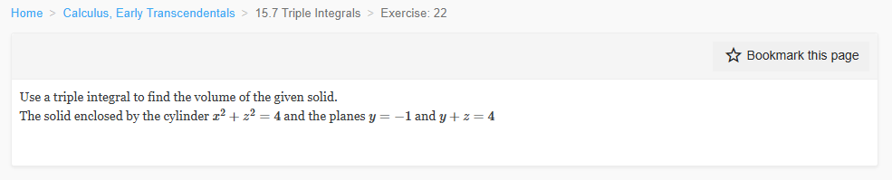

Please solve the problem in the following image.
(Image `20260928_141531_526425_utc_0800_0.png`. Alt text: Image: human_20260928_141531_526425_utc_0800)

20260928_141531_526425_utc_0800_0.png
End of problem
Answer
## Problem
Use a triple integral to find the volume of the solid enclosed by the cylinder
$$x^2 + z^2 = 4$$
and the planes $y = -1$ and $y + z = 4$.
## Step 1 — Understand the solid and find the shadow (base) region
The equation $x^2 + z^2 = 4$ contains **no $y$**, so it describes a *right circular cylinder* of radius $2$ whose axis is the $y$-axis. The two planes $y = -1$ and $y + z = 4$ (i.e. $y = 4 - z$) slice this infinite cylinder into a bounded solid.
The **projection (shadow) of the solid onto the $xz$-plane** is the disk
$$D = \{(x,z) : x^2 + z^2 \le 4\},$$
which is the cross-section of the cylinder. This is exactly the base we integrate over.
## Step 2 — Determine the $y$-limits for a fixed point of the shadow
Fix any $(x,z) \in D$. The solid lies between the two planes, so $y$ runs from the lower plane to the upper plane:
$$-1 \;\le\; y \;\le\; 4 - z.$$
**Check that the limits never cross:** on $D$ we have $-2 \le z \le 2$, hence
$$4 - z \in [2, 6] \quad\Longrightarrow\quad 4 - z \ge 2 > -1 \;\text{ always}.$$
So the ordering is always valid and we may simply subtract: the $y$-length of a vertical thread is
$$(4 - z) - (-1) = 5 - z.$$
## Step 3 — Set up the triple integral
$$V = \iiint_{E} 1\,dV = \iint_{D}\left(\int_{-1}^{\,4-z} dy\right) dA = \iint_{D} (5 - z)\, dA.$$
## Step 4 — Evaluate the double integral
**Method A (symmetry + area).** Split the integrand:
$$V = \iint_D 5\,dA - \iint_D z\,dA.$$
- $\iint_D 5\,dA = 5\,\text{area}(D) = 5\,\pi(2)^2 = 20\pi$.
- $\iint_D z\,dA = 0$, because $D$ is symmetric about the line $z = 0$ (the $x$-axis) and $z$ is an odd function; equivalently the average of $z$ over a disk centered at the origin is $0$.
Therefore
$$V = 20\pi - 0 = 20\pi.$$
**Method B (cylindrical coordinates, as a check).** Put $x = r\cos\theta$, $z = r\sin\theta$, with $0 \le r \le 2$, $0 \le \theta \le 2\pi$, and $dA = r\,dr\,d\theta$. Then $z = r\sin\theta$ and
$$V = \int_0^{2\pi}\!\int_0^{2} (5 - r\sin\theta)\, r\, dr\, d\theta
= \int_0^{2\pi}\Big[\tfrac{5}{2}r^2 - \tfrac{1}{3}r^3\sin\theta\Big]_{0}^{2} d\theta
= \int_0^{2\pi}\Big(10 - \tfrac{8}{3}\sin\theta\Big) d\theta.$$
Now $\int_0^{2\pi} 10\,d\theta = 20\pi$ and $\int_0^{2\pi}\sin\theta\,d\theta = 0$, so again
$$V = 20\pi - 0 = 20\pi.$$
**Method C (slice in $x$, an independent route).** Integrating the inner $y$ variable gives a vertical strip of height $5 - z$. Integrating next in $z$ over the chord $|z| \le \sqrt{4-x^2}$, the odd term $\int z\,dz = 0$, leaving the strip area contribution $\int_{-2}^{2} 2\sqrt{4-x^2}\,dz\cdot 5 = 5\cdot 2\sqrt{4-x^2}$. Then
$$V = \int_{-2}^{2} 5\cdot 2\sqrt{4-x^2}\,dx
= 10\int_{-2}^{2}\sqrt{4 - x^2}\,dx
= 10\cdot\tfrac{1}{2}\pi(2)^2 = 20\pi,$$
using the fact that $\int_{-2}^{2}\sqrt{4-x^2}\,dx$ is the *area of a semicircle of radius $2$*, which equals $\tfrac12\pi(2)^2 = 2\pi$.
## Step 5 — Final answer and interpretation
$$\boxed{V = 20\pi \approx 62.83}$$
**Interpretation / key idea.** The volume equals the area of the cylinder's cross-section times the *average* height of the solid:
$$V = \iint_D (5 - z)\,dA = \text{area}(D)\times\overline{(5-z)} = 4\pi \cdot 5 = 20\pi.$$
The average height is exactly $5$ because the slanting plane $y = 4 - z$ is as much above its "mid-height" $y = 5$ on the half $z<0$ as it is below it on the half $z>0$, so the $z$-dependence integrates away. This is the cleanest way to see why the answer is a plain multiple of $\pi$.
**Common pitfalls.**
1. Do **not** replace $y+z=4$ by $y=4$ — the correct upper surface is $y = 4 - z$.
2. The shadow is a **disk in the $xz$-plane** (because the cylinder is missing $y$), not in the $xy$-plane; choosing the wrong projection changes the limits.
3. Skipping the check $4 - z \ge -1$ on $D$ risks writing reversed limits; here it is harmless because $z \le 2$.
---
No graphical results.